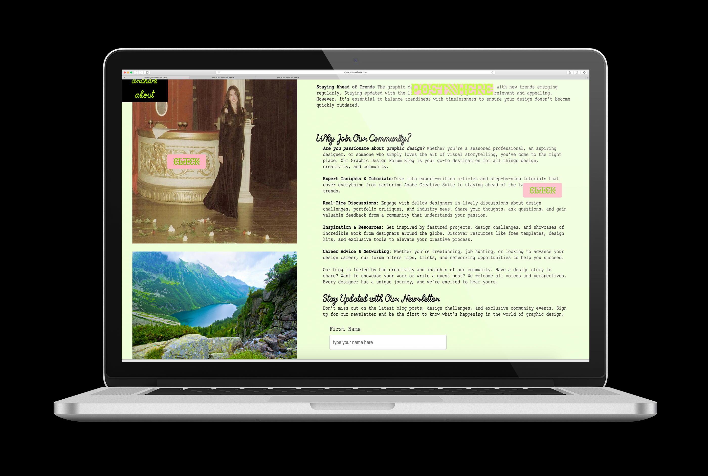
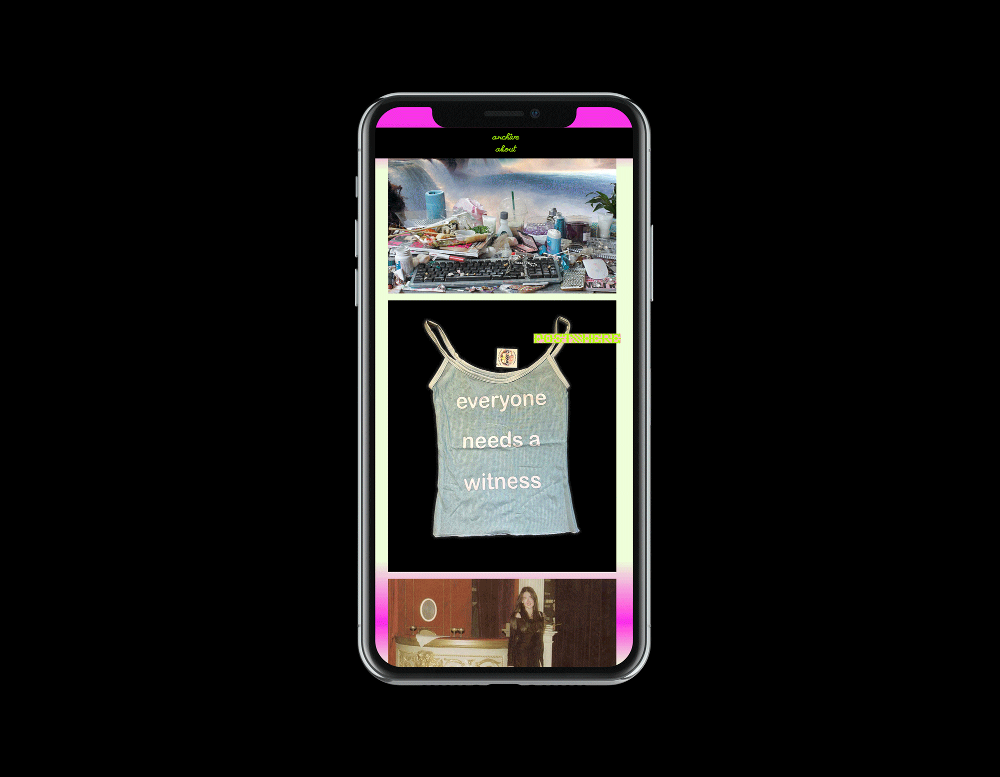
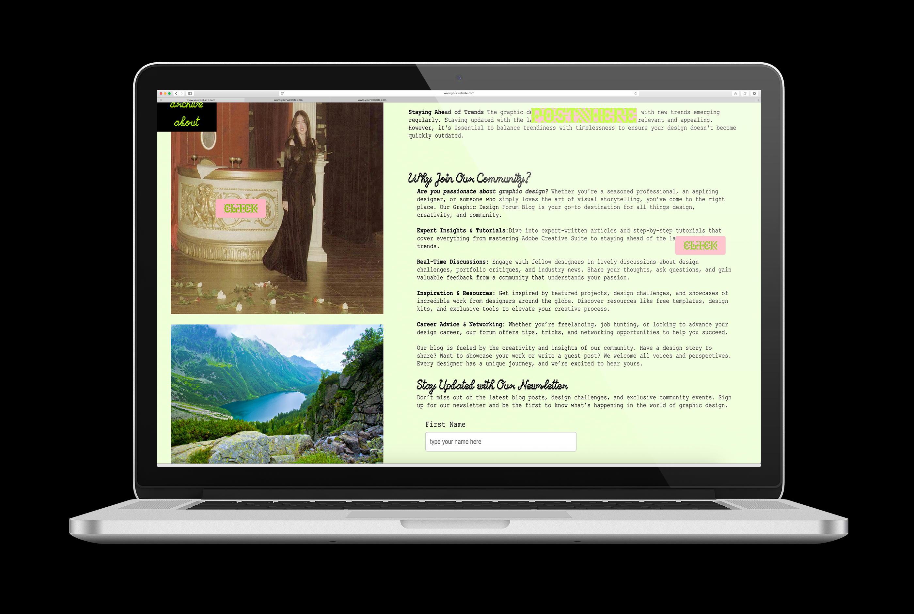
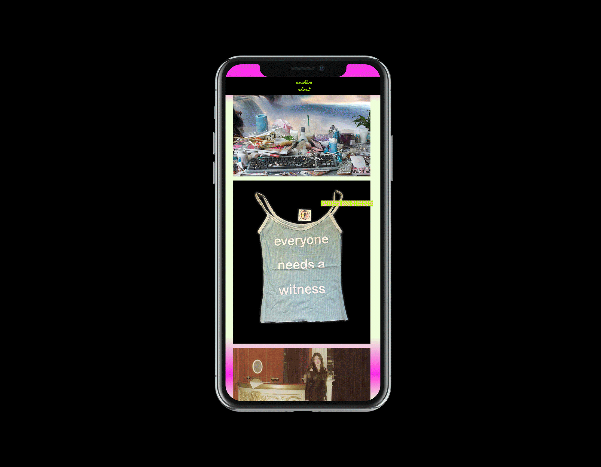
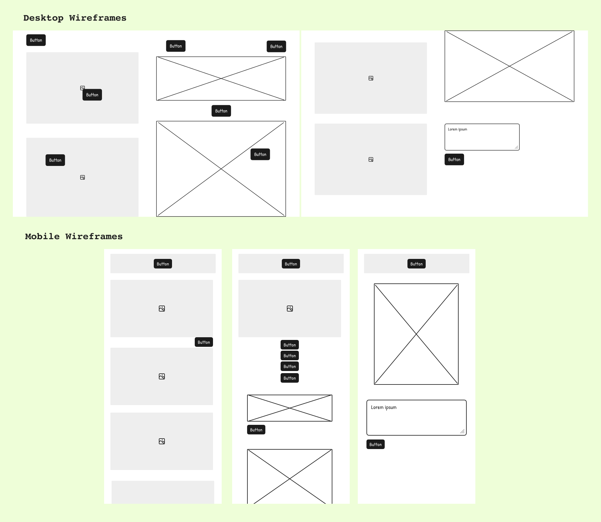
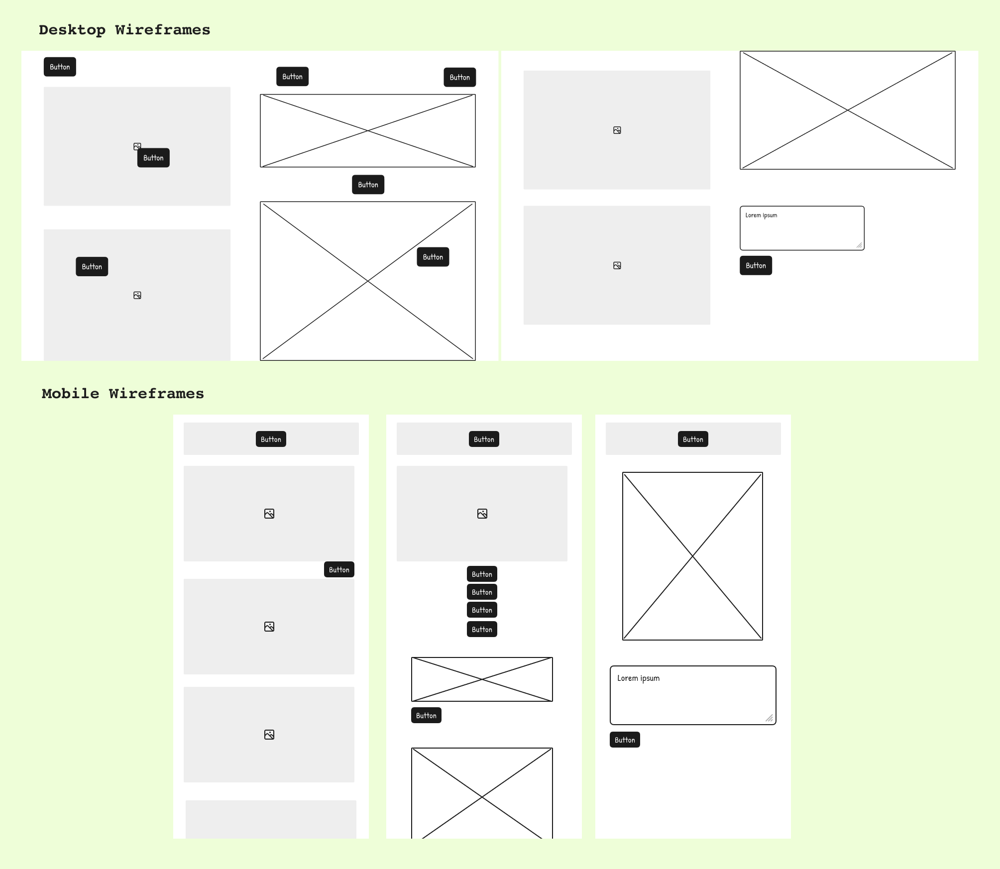

Blog Hub
Fall 2024
This project was a personal challenge to design and develop a single landing page for a mock website that was both highly functional and leveraged JavaScript for enhanced interactivity. My goal was to create an engaging, immersive experience that encouraged user interaction, making the site feel dynamic and alive.
The concept of the website is a blog hub where users can create and share their own blogs with others. To elevate the user experience, I incorporated a 3D environment that allows visitors to explore different blogs in an interactive and visually compelling way. Instead of a traditional blog layout, users navigate through a dynamic space where clicking on different elements reveals blog posts, images, and other multimedia content. This approach transforms content discovery into an exploratory journey, enhancing engagement and creativity.
The site was built using HTML, CSS, and JavaScript, with a focus on responsiveness and usability. I utilized JavaScript to implement smooth transitions, interactive elements, and real-time content display, ensuring a seamless and enjoyable experience across different devices. This project allowed me to refine my skills in front-end development, UX/UI design, and interactive web experiences while pushing the boundaries of traditional blog presentation.
 





 
